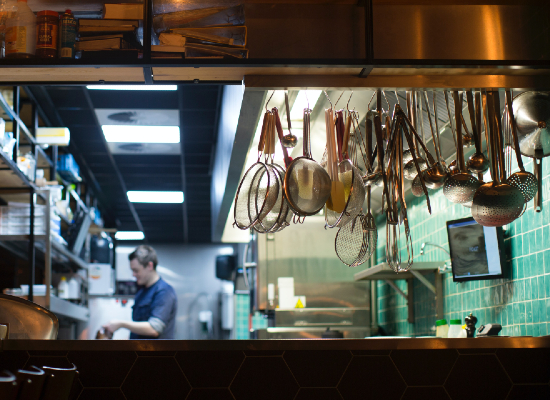

제임스 창이 묻습니다.
날 때부터 국자를 찾았다는 '제임스 창'씨, 선대 짬뽕맨 '브라이언 호스'씨의 진전을 이어 '짬뽕맨이 간다'의 총괄 셰프를 맡게 되었다. 그가 중식을 시작한 나이는 약 생후 2개월. 놀랍게도 그는 현재 20대 중반의 청년이다.
그의 짬뽕은 예술 그 자체이며 역사적으로 보존해야 마땅하다고 세간에서는 일컫는다. 장독초 3학년 2반에 재학 중인 장봉철군은 그에 대해 "제임스 창의 짬뽕은 흉내 낼만한 게 아니다. 우리 동네 중국집의 짬뽕이 그의 짬뽕의 반의반의반의반의반이라도 닮았으면 하는 바램이다." 라고 말한 적이 있다. 참고로 현재 장봉철군은 부모님의 권유로 '짬뽕철'로 개명신청을 해둔 상태이다.
짬뽕맨이 간다
4대 짬뽕맨 '제임스 창'
맛있는 짬뽕은 그냥 나오는 게 아닙니다.
중국 본토에서 태어난 '제임스 창'씨는 국산 재료만 고집합니다.
그들에게 밝은 길을 찾아 주며 그들을 행복스럽고 평화스러운 곳으로 인도하겠다는 커다란 이상을 품었기 때문이다. 그러므로 그들은 길지 아니한 목숨을 사는가 싶이 살았으며 그들의 그림자는 천고에 사라지지 않는 것이다.
짬뽕맨의 냄비는 한시도 식지 않습니다.
그들에게 밝은 길을 찾아 주며 그들을 행복스럽고 평화스러운 곳으로 인도하겠다는 커다란 이상을 품었기 때문이다. 그러므로 그들은 길지 아니한 목숨을 사는가 싶이 살았으며 그들의 그림자는 천고에 사라지지 않는 것이다.

짬뽕맨은 고객과의 소통을 주저하지 않습니다.
그들에게 밝은 길을 찾아 주며 그들을 행복스럽고 평화스러운 곳으로 인도하겠다는 커다란 이상을 품었기 때문이다. 그러므로 그들은 길지 아니한 목숨을 사는가 싶이 살았으며 그들의 그림자는 천고에 사라지지 않는 것이다.
'짬뽕맨이 간다' 자체 배달 서비스 개시
이젠 집에서도 '짬뽕맨'의 짬뽕을 즐기실 수 있습니다.